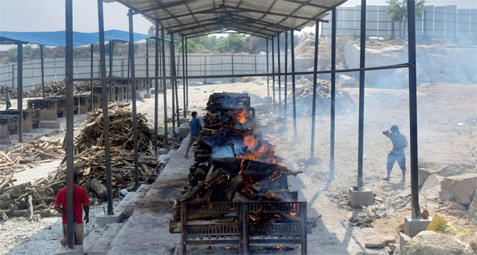

الأثنين
28 من رمضان 1442 هــ 10 مايو 2021
29℃ القاهرة, مصر
بيانات الطالب
| مصر | العالم | تكنولوجيا | رياضة | كاريكاتير |
سفير ألمانيا تخفف القيود.. والنمسا تتعافى.. واليونان تفتح الشواطئ

الصحة العالمية: «كورونا الهندية» فتاكة ومقاومة للقاحات
بينما تواصل الهند تسجيل أرقامها القياسية، سواء على صعيد الإصابات بفيروس "كورونا"
أو الوفيات منه، حذرت منظمة الصحة العالمية من أن السلالة الهندية المتحورة من
الفيروس أكثر عدوى وفتكا، بل وأكبر قدرة على مقاومة اللقاحات، معتبرة أن التطعيم
لوحده لن يكون كافيا لاستعادة السيطرة على الوضع فى الهند الآن، حيث يتضاعف الوباء
بين آلاف الأشخاص بوتيرة من الصعب إيقافها.
وقالت سوميا سواميناثان، كبيرة العلماء فى منظمة الصحة العالمية: "تم تصنيف السلالة
الهندية ضمن قائمة المتحورات الأكثر خطورة من النسخة الأصلية للفيروس، لأن قدرتها
على التفشى ومقاومة اللقاحات أكبر. كما أن معدل الوفيات بها أعلى من معدلات الوفاة
بالنسخة الأصلية" .
وحملت "سواميناثان" الحكومة الهندية مسئولية الوضع الذى آل إليه الوباء فى البلاد،
معتبرة أن "الأمر سيستغرق شهورا، إن لم يكن سنوات، للوصول إلى معدل ٧٠ إلى ٨٠%
تلقيح بين السكان”، إذ أن البلاد لم تمنح حتى الآن اللقاح بجرعتيه سوى لـ٢% فقط من
سكانها، البالغ عددهم ١٫٣ مليار نسمة.
يأتى ذلك فى حين أعلنت الصحة الهندية، أمس، تسجيل ٤٠٣ آلاف و٧٣٨ حالة إصابة جديدة
بالفيروس خلال الـ٢٤ ساعة الماضية، لترتفع حصيلة الإصابات الإجمالية بالبلاد إلى ٢٢
مليونا و٢٩٦ ألفا و٤١٤ حالة، بينما بلغت الوفيات ٢٤٢ ألفا و٣٦٢، بعد تسجيل ٤٠٩٢
حالة وفاة أمس.
ومع تفاقم الأزمة وخروجها عن السيطرة، ظهرت العديد من المبادرات المحلية فى الهند،
لمعاونة الجهود الرسمية فى احتواء الوباء ومساعدة المرضى، حيث تعاونت، على سبيل
المثال، منظمات غير ربحية مع سائقى سيارات "الريشكا"، سيارة ذات ثلاث عجلات، لجعلها
سيارات إسعاف تقدم خدمات مجانية للمرضى، وذلك بعد تجهيزها بأسطوانات الأكسجين
اللازمة وأجهزة قياس نسب الأكسجين فى الدم، وغيرها من الإمدادات الطبية، كذلك تسهم
الجماعات الدينية، على اختلافها، فى توفير أسطوانات الأكسجين بالمجان للمرضى، فضلا
عن توزيع الطعام على المرضى المعزولين داخل منازلهم بالمجان أيضا.
إلى جانب ذلك، تلعب وسائل التواصل الاجتماعى دورا فى التوفيق بين المحتاجين لبلازما
الدم والمتبرعين على أساس فصيلة الدم وتاريخ التشخيص والموقع. كما يشارك نجوم
السينما الهندية (بوليوود) فى تلك جهود الإغاثة من خلال معاونة المرضى فى الحصول
على أسرة فى المستشفيات، والتبرع بأسطوانات الأكسجين، بل وتقديم تعويضات مالية لمن
فقدوا وظائفهم بسبب الوباء.
وبعيدا عن الهند، حذرت صوفيا تشان سيوتشى، وزيرة الغذاء والصحة فى هونج كونج، من
أنه فى حالة ظهور سلالات مختلفة من "كورونا"، مع مصادر انتقال للعدوى لم يتم
تعقبها، ستضطر البلاد للعودة إلى تدابير السيطرة الأكثر صرامة.
وقد أعلنت هونج كونج، الجمعة الماضى، عزمها تخفيف فترة الحجر الصحى لمن تلقوا
لقاحات "كورونا" من المسافرين القادمين إلى المدينة، وكذلك المقيمون الذين لهم
اتصال وثيق بأشخاص مصابين بمرض "كوفيد-19".
وفى ألمانيا، حذرت وزيرة العدل، كريستينا لامبرشت، من تزوير بطاقات التطعيم أو
استخدام مستندات مزورة، فى ظل تخفيف بعض القيود بالنسبة لمن تلقوا التطعيم ضد
الفيروس، موضحة أن ذلك ليس بالجريمة الهينة، ولكنها جريمة جنائية يمكن التعرض
بسببها لغرامات مالية شديدة أو للسجن.
وقد تم إلغاء بعض القيود لمن تلقوا لقاح الفيروس بشكل كامل، وبالنسبة للأشخاص
المتعافين الذين أثبتوا أنهم تجاوزا تماما الإصابة بالمرض، بدءا من أمس فى جميع
أنحاء ألمانيا، حيث يمكنهم مثلا الالتقاء بغيرهم دون قيود. كما أنهم ليسوا مضطرين
للالتزام بمواعيد حظر التجوال الليلية، ولا يحتاجون لنتيجة اختبار سلبى عند التسوق
أو الذهاب لصالونات الحلاقة.
وفى النمسا المجاورة، أظهرت البيانات الرسمية تحسن الأداء الاقتصادى للبلاد خلال
الربع الأول من العام الحالى، إذ شهدت البلاد زيادة فى ناتجها الإجمالى ٠٫٢% مقارنة
بالربع الأخير من العام الماضى.
وقد شهد الربع الأخير من العام الماضى تراجعا اقتصاديا ٢٫٧%. وتوقع المحللون انكماش
الاقتصاد أكثر بمعدل ١٫٢% خلال الربع الأول من العام الحالى.
فى الوقت نفسه، بدأت مظاهر الحياة فى اليونان استعادة بعض من سيرتها الأولى قبل
الجائحة، حيث تمت إعادة فتح الشواطئ، استعدادا لعودة الزوار الأجانب بدءا من السبت
الموافق ١٥ مايو.